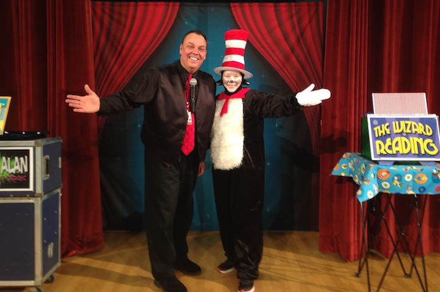

Dr Seuss Magician
Dr Seuss Magician Brings the Books of Dr. Seuss To Life In A Fun Reading Show! The Final Tour of this Show!
Welcome to the Dr Seuss Magic of Dean Alan

Dr. Seuss is loved by children and adults everywhere. Dean specializes in Dr Seuss magic shows for audiences of young children. His Seuss programs began simply enough as preschool shows and eventually developed into library and elementary school assemblies. He’s been creating new shows about Seuss books for nearly 25 years. In that time, Dean Alan has become the favorite Dr Seuss Magician in the country.
What does a Dr. Seuss Magician do? Well, he puts on an exciting show that uses magic to help illustrate different stories from the world of Dr. Seuss. This helps promote a love for reading among the kids.
By using magic, storytelling and other theatrical methods, Dean Alan has brought to life quite a few Dr. Seuss stories including: The Lorax, The Sneetches, The Cat In The Hat, Horton Hears A Who, How The Grinch Stole Christmas, The Bippilo Seed, Green Eggs and Ham, I Can Read With My Eyes Shut, and many others. AND each year he brings out a brand new show with new characters & stories.
In 2025, we bring you the final version of the Seuss program called The Seuss-tacular Magic Show! Each year we add books or stories to the show. The program is filled with great magic, audience participation and plenty of Seuss stories to please any child!
The new show will begin in February and run until April. There are plenty of dates open right now. These dates will all get booked and they tend to go fairly quickly. So act fast if you want to schedule the show. This year will be the best one yet!!!! BTW, I can present the Seuss show any time of year, it’s just that the newer version begins in February.
I will be in Nashville last week of February. Then in Virginia from March 3-15th.
This show runs 40-45 minutes. This version is geared towards preschool audiences. There is an elementary school version of the show which can be found at www.WizardofReading.com.
If you want a great show that promotes reading and explores the World of Seuss then you want the best Dr Seuss Magician, Dean Alan! To schedule a date, click here.
If you’re interested in finding out more about Dean Alan, simply click here!